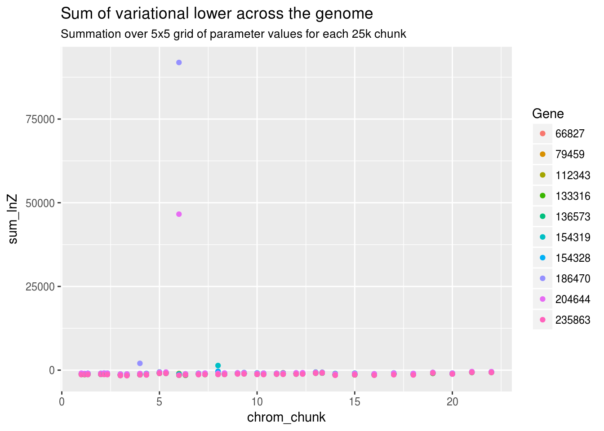
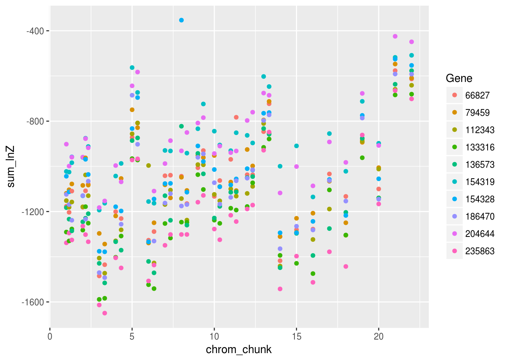
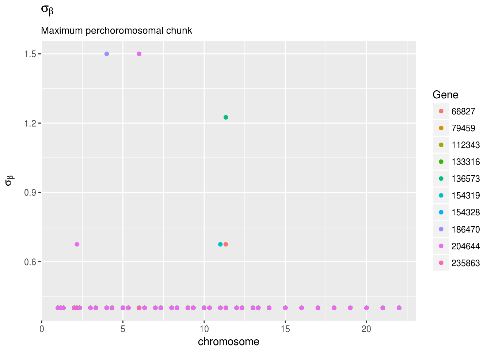
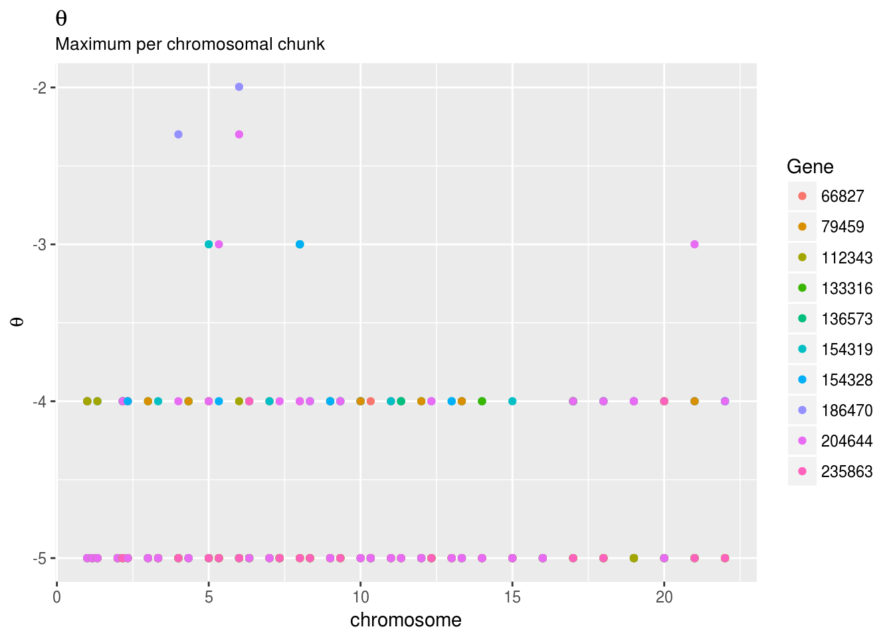

Last updated: 2017-03-29
Code version: ac6247a
This is the result of running RSSR on Whole Blood eQTL, using the 1 thousand genomes LD panel
library(dplyr)
library(ggplot2)
library(tidyr)
library(RColumbo)
lnz_df <- readRDS("../data/GTEx_rssr_results/Whole_Blood/lnzdf.RDS")
head(lnz_df) # A tibble: 6 × 7
log10odds lnZ sigb chunk chrom fgeneid tissue
<dbl> <dbl> <dbl> <int> <int> <dbl> <chr>
1 -4.999996 0.6784462 0.400 1 1 186470 Whole_Blood
2 -3.999957 2.2198926 0.400 1 1 186470 Whole_Blood
3 -2.999565 -4.3478718 0.400 1 1 186470 Whole_Blood
4 -2.298853 -51.8068613 0.400 1 1 186470 Whole_Blood
5 -1.995635 -116.8349443 0.400 1 1 186470 Whole_Blood
6 -4.999996 0.4294538 0.675 1 1 186470 Whole_BloodThe lnZ column represents the log variational lower bound for the combination of \(\sigma_\beta\) (sigb) and \(\theta=\log_{10}{\frac{\pi}{1-\pi}}\) (log10odds) values used on chromosome chrom chunk number chunk. Chunks are at most 25000 SNPs. If there are \(P\) chunks in the genome, then let’s call:
\[f_{p,g,i,j}(\theta_i,\sigma_{\beta,j},\hat{\beta}_{g,p},\hat{s}_{g,p})\]
the log-variational lower bound for gene \(g\), chunk \(p\), and grid entry \(i,j\).
A key assumption of my model is that the chunks are independent. Let’s test that assumption by visualizing \(lnZ\) across the chunks. This plot shows the sum of the variational lower bound (lnZ) for each chunk of each chromosome across the 25(5x5) combinations of parameter values. \[ f_{p,g}(\hat{\beta}_g,\hat{s}_g)=\sum_{i=1}^5 \sum_{j=1}^5 f_{p,g,i,j}(\theta_i,{\sigma_{\beta}}_j,\hat{\beta}_{g,p},\hat{s}_{g,p})\]
lnz_df <- distinct(lnz_df,chunk,chrom) %>% mutate(chunk_i=1:n()) %>% group_by(chrom) %>% mutate(chunk_p=(chunk-1)/sum(chunk)) %>% ungroup() %>% inner_join(lnz_df) %>% mutate(chrom_chunk=chrom+chunk_p)Joining, by = c("chunk", "chrom")lnz_df_g <- group_by(lnz_df,chrom_chunk,fgeneid) %>% summarize(sum_lnZ=sum(lnZ)) %>% ungroup()
ggplot(lnz_df_g)+geom_point(aes(x=chrom_chunk,y=sum_lnZ,col=factor(fgeneid)))+guides(col=guide_legend(title="Gene"))+ggtitle("Sum of variational lower across the genome",subtitle = "Summation over 5x5 grid of parameter values for each 25k chunk")
It looks like the variational lower bound for part of chromosome 6 is (occasionally) really high. Let’s remove it. (This likely contains the HLA region)
lnz_df_g <- filter(lnz_df_g,sum_lnZ<0)
ggplot(lnz_df_g)+geom_point(aes(x=chrom_chunk,y=sum_lnZ,col=factor(fgeneid)))+guides(col=guide_legend(title="Gene"))
Let’s look at values of \(\sigma_{\beta,j}\) and \(\theta_i\) that give the highest variational lower bounds for each gene
\[\hat{\sigma}_{\beta,p}=\underset{j}{\arg \max} f_{p,g,i,j}(\theta_i,\sigma_{\beta,j},\hat{\beta}_{g,p},\hat{s}_{g,p}) \] \[\hat{\theta}_p=\underset{i}{\arg \max} f_{p,g,i,j}(\theta_i,\sigma_{\beta,j},\hat{\beta}_g,\hat{s}_g)\]
max_param <- group_by(lnz_df,chrom,chunk,fgeneid) %>% filter(lnZ==max(lnZ))
ggplot(max_param)+ geom_point(aes(x=chrom_chunk,y=sigb,col=factor(fgeneid)))+
guides(col=guide_legend(title="Gene"))+
ggtitle(expression(sigma[beta]),subtitle = "Maximum perchoromosomal chunk")+
xlab("chromosome")+ylab(expression(sigma[beta]))
ggplot(max_param)+geom_point(aes(x=chrom_chunk,y=log10odds,col=factor(fgeneid)))+guides(col=guide_legend(title="Gene"))+ggtitle(expression(theta),subtitle = "Maximum per chromosomal chunk")+xlab("chromosome")+ylab(expression(theta))
sessionInfo()R version 3.3.3 (2017-03-06)
Platform: x86_64-pc-linux-gnu (64-bit)
Running under: Ubuntu 16.04.2 LTS
locale:
[1] LC_CTYPE=en_US.UTF-8 LC_NUMERIC=C
[3] LC_TIME=en_US.UTF-8 LC_COLLATE=en_US.UTF-8
[5] LC_MONETARY=en_US.UTF-8 LC_MESSAGES=en_US.UTF-8
[7] LC_PAPER=en_US.UTF-8 LC_NAME=C
[9] LC_ADDRESS=C LC_TELEPHONE=C
[11] LC_MEASUREMENT=en_US.UTF-8 LC_IDENTIFICATION=C
attached base packages:
[1] stats graphics grDevices utils datasets methods base
other attached packages:
[1] rssr_0.1-0 lazyeval_0.2.0 h5_0.9.8 RColumbo_0.1.0
[5] workflowr_0.4.0 rmarkdown_1.3 ggplot2_2.2.1 tidyr_0.6.1
[9] dplyr_0.5.0
loaded via a namespace (and not attached):
[1] Rcpp_0.12.10 knitr_1.15.1 magrittr_1.5
[4] munsell_0.4.3 colorspace_1.3-2 R6_2.2.0
[7] stringr_1.2.0 plyr_1.8.4 tools_3.3.3
[10] grid_3.3.3 gtable_0.2.0 DBI_0.6
[13] git2r_0.18.0 htmltools_0.3.5 RcppParallel_4.3.20
[16] yaml_2.1.14 assertthat_0.1 rprojroot_1.2
[19] digest_0.6.12 tibble_1.2 rsconnect_0.7
[22] memoise_1.0.0 RSQLite_1.1-2 evaluate_0.10
[25] labeling_0.3 stringi_1.1.2 scales_0.4.1
[28] backports_1.0.5 This R Markdown site was created with workflowr